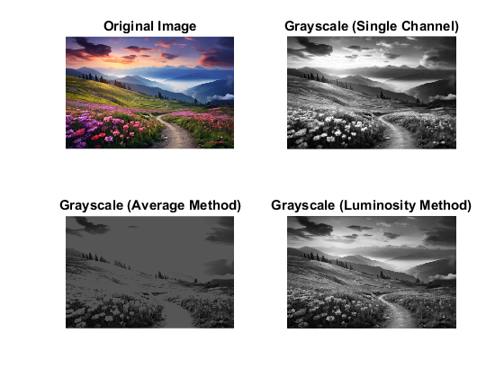
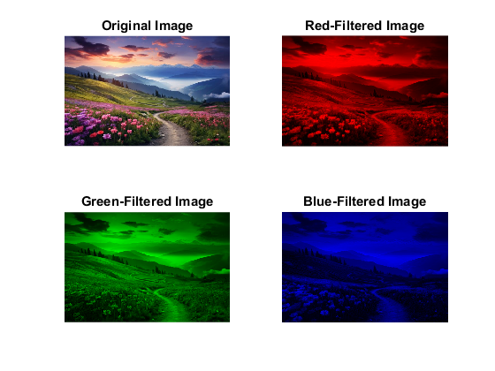

clc;
clear;
close all;
image = imread('image_used.jpg');
[rows, cols, channels] = size(image);
disp(['Image dimensions: ', num2str(rows), ' x ', num2str(cols), ' x ', num2str(channels)]);
specified_row = 1010;
specified_col = 505;
if rows >= specified_row && cols >= specified_col
disp(['Pixel value at (', num2str(specified_row), ', ', num2str(specified_col), '): ', ...
num2str(image(specified_row, specified_col, :))]);
else
center_row = round(rows / 2);
center_col = round(cols / 2);
disp(['Center pixel value at (', num2str(center_row), ', ', num2str(center_col), '): ', ...
num2str(image(center_row, center_col, :))]);
end
gray_single_channel = image(:, :, 1);
red_channel = image(:, :, 1);
green_channel = image(:, :, 2);
blue_channel = image(:, :, 3);
gray_avg = uint8((red_channel + green_channel + blue_channel) / 3);
gray_luminosity = uint8(0.299 * red_channel + 0.587 * green_channel + 0.114 * blue_channel);
image_red = image;
image_red(:, :, 2:3) = 0;
image_green = image;
image_green(:, :, [1, 3]) = 0;
image_blue = image;
image_blue(:, :, 1:2) = 0;
figure(1);
subplot(2, 2, 1), imshow(image); title('Original Image');
subplot(2, 2, 2), imshow(gray_single_channel); title('Grayscale (Single Channel)');
subplot(2, 2, 3), imshow(gray_avg); title('Grayscale (Average Method)');
subplot(2, 2, 4), imshow(gray_luminosity); title('Grayscale (Luminosity Method)');
figure(2);
subplot(2, 2, 1), imshow(image); title('Original Image');
subplot(2, 2, 2), imshow(image_red); title('Red-Filtered Image');
subplot(2, 2, 3), imshow(image_green); title('Green-Filtered Image');
subplot(2, 2, 4), imshow(image_blue); title('Blue-Filtered Image');
Image dimensions: 399 x 599 x 3
Center pixel value at (200, 300): 70 91 122
 